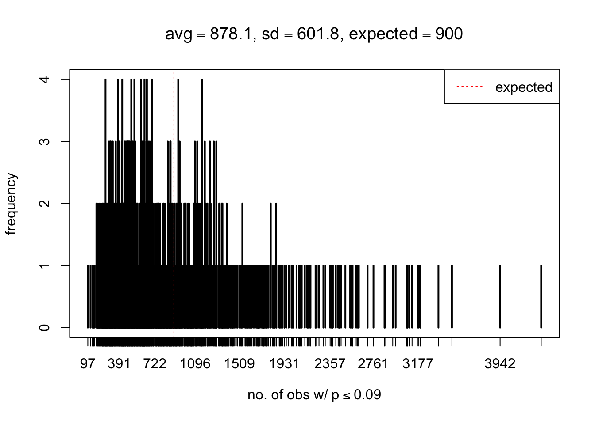
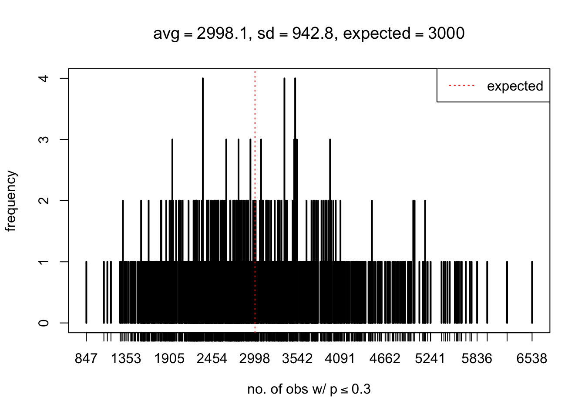

Occurrence of Extreme Observations in Simulated Correlated Null Data
Lei Sun
2016-11-24
Last updated: 2018-05-15
workflowr checks: (Click a bullet for more information)-
✔ R Markdown file: up-to-date
Great! Since the R Markdown file has been committed to the Git repository, you know the exact version of the code that produced these results.
-
✔ Environment: empty
Great job! The global environment was empty. Objects defined in the global environment can affect the analysis in your R Markdown file in unknown ways. For reproduciblity it’s best to always run the code in an empty environment.
-
✔ Seed:
set.seed(12345)The command
set.seed(12345)was run prior to running the code in the R Markdown file. Setting a seed ensures that any results that rely on randomness, e.g. subsampling or permutations, are reproducible. -
✔ Session information: recorded
Great job! Recording the operating system, R version, and package versions is critical for reproducibility.
-
Great! You are using Git for version control. Tracking code development and connecting the code version to the results is critical for reproducibility. The version displayed above was the version of the Git repository at the time these results were generated.✔ Repository version: 388e65e
Note that you need to be careful to ensure that all relevant files for the analysis have been committed to Git prior to generating the results (you can usewflow_publishorwflow_git_commit). workflowr only checks the R Markdown file, but you know if there are other scripts or data files that it depends on. Below is the status of the Git repository when the results were generated:
Note that any generated files, e.g. HTML, png, CSS, etc., are not included in this status report because it is ok for generated content to have uncommitted changes.Ignored files: Ignored: .DS_Store Ignored: .Rhistory Ignored: .Rproj.user/ Ignored: analysis/.DS_Store Ignored: analysis/BH_robustness_cache/ Ignored: analysis/FDR_Null_cache/ Ignored: analysis/FDR_null_betahat_cache/ Ignored: analysis/Rmosek_cache/ Ignored: analysis/StepDown_cache/ Ignored: analysis/alternative2_cache/ Ignored: analysis/alternative_cache/ Ignored: analysis/ash_gd_cache/ Ignored: analysis/average_cor_gtex_2_cache/ Ignored: analysis/average_cor_gtex_cache/ Ignored: analysis/brca_cache/ Ignored: analysis/cash_deconv_cache/ Ignored: analysis/cash_fdr_1_cache/ Ignored: analysis/cash_fdr_2_cache/ Ignored: analysis/cash_fdr_3_cache/ Ignored: analysis/cash_fdr_4_cache/ Ignored: analysis/cash_fdr_5_cache/ Ignored: analysis/cash_fdr_6_cache/ Ignored: analysis/cash_plots_cache/ Ignored: analysis/cash_sim_1_cache/ Ignored: analysis/cash_sim_2_cache/ Ignored: analysis/cash_sim_3_cache/ Ignored: analysis/cash_sim_4_cache/ Ignored: analysis/cash_sim_5_cache/ Ignored: analysis/cash_sim_6_cache/ Ignored: analysis/cash_sim_7_cache/ Ignored: analysis/correlated_z_2_cache/ Ignored: analysis/correlated_z_3_cache/ Ignored: analysis/correlated_z_cache/ Ignored: analysis/create_null_cache/ Ignored: analysis/cutoff_null_cache/ Ignored: analysis/design_matrix_2_cache/ Ignored: analysis/design_matrix_cache/ Ignored: analysis/diagnostic_ash_cache/ Ignored: analysis/diagnostic_correlated_z_2_cache/ Ignored: analysis/diagnostic_correlated_z_3_cache/ Ignored: analysis/diagnostic_correlated_z_cache/ Ignored: analysis/diagnostic_plot_2_cache/ Ignored: analysis/diagnostic_plot_cache/ Ignored: analysis/efron_leukemia_cache/ Ignored: analysis/fitting_normal_cache/ Ignored: analysis/gaussian_derivatives_2_cache/ Ignored: analysis/gaussian_derivatives_3_cache/ Ignored: analysis/gaussian_derivatives_4_cache/ Ignored: analysis/gaussian_derivatives_5_cache/ Ignored: analysis/gaussian_derivatives_cache/ Ignored: analysis/gd-ash_cache/ Ignored: analysis/gd_delta_cache/ Ignored: analysis/gd_lik_2_cache/ Ignored: analysis/gd_lik_cache/ Ignored: analysis/gd_w_cache/ Ignored: analysis/knockoff_10_cache/ Ignored: analysis/knockoff_2_cache/ Ignored: analysis/knockoff_3_cache/ Ignored: analysis/knockoff_4_cache/ Ignored: analysis/knockoff_5_cache/ Ignored: analysis/knockoff_6_cache/ Ignored: analysis/knockoff_7_cache/ Ignored: analysis/knockoff_8_cache/ Ignored: analysis/knockoff_9_cache/ Ignored: analysis/knockoff_cache/ Ignored: analysis/knockoff_var_cache/ Ignored: analysis/marginal_z_alternative_cache/ Ignored: analysis/marginal_z_cache/ Ignored: analysis/mosek_reg_2_cache/ Ignored: analysis/mosek_reg_4_cache/ Ignored: analysis/mosek_reg_5_cache/ Ignored: analysis/mosek_reg_6_cache/ Ignored: analysis/mosek_reg_cache/ Ignored: analysis/pihat0_null_cache/ Ignored: analysis/plot_diagnostic_cache/ Ignored: analysis/poster_obayes17_cache/ Ignored: analysis/real_data_simulation_2_cache/ Ignored: analysis/real_data_simulation_3_cache/ Ignored: analysis/real_data_simulation_4_cache/ Ignored: analysis/real_data_simulation_5_cache/ Ignored: analysis/real_data_simulation_cache/ Ignored: analysis/rmosek_primal_dual_2_cache/ Ignored: analysis/rmosek_primal_dual_cache/ Ignored: analysis/seqgendiff_cache/ Ignored: analysis/simulated_correlated_null_2_cache/ Ignored: analysis/simulated_correlated_null_3_cache/ Ignored: analysis/simulated_correlated_null_cache/ Ignored: analysis/simulation_real_se_2_cache/ Ignored: analysis/simulation_real_se_cache/ Ignored: analysis/smemo_2_cache/ Ignored: data/LSI/ Ignored: docs/.DS_Store Ignored: docs/figure/.DS_Store Ignored: output/fig/
Expand here to see past versions:
| File | Version | Author | Date | Message |
|---|---|---|---|---|
| html | e05bc83 | LSun | 2018-05-12 | Update to 1.0 |
| Rmd | cc0ab83 | Lei Sun | 2018-05-11 | update |
| html | 0f36d99 | LSun | 2017-12-21 | Build site. |
| html | 853a484 | LSun | 2017-11-07 | Build site. |
| html | 59fd661 | LSun | 2017-02-03 | Build site. |
| Rmd | 313897f | LSun | 2017-02-03 | details |
| html | 313897f | LSun | 2017-02-03 | details |
| html | 36c1e4c | LSun | 2017-02-03 | Build site. |
| Rmd | d25a6e3 | LSun | 2017-02-03 | step-down |
| Rmd | d616c3d | LSun | 2017-02-03 | occurrence |
| html | d616c3d | LSun | 2017-02-03 | occurrence |
Last updated: 2018-05-15
Code version: 388e65e
Introduction
During a conversation with Matthew on correlated \(z\)-scores, Prof. Michael Stein remarked that “if the marginal distribution is correct then the expected number exceeding any threshold should be correct… so if the tail is ‘usually’ deflated, it should be that with some small probability there are many large \(z\)-scores (even in the tail).” So we are running this simulation to check that insight, that is, “if there are usually not enough in the tail then there must be some probability of too many in the tail,” based on the assumption that, on average, the \(p\)-values are uniform after voom transformation.
Using GTex/Liver data, we sample \(N = 10\)K genes from a \(5\) vs \(5\) study, and keep the correlation among genes. The data for each gene can then be transformed by voom to a \(p\)-value; thus we get \(10\)K \(p\)-values for each simulation run. A total of \(m = 1\)K runs generate a \(m \times N\) matrix of \(p\)-values, each row an independent simulation run with \(10\)K genes.
With different pre-specified thresholds \(T_p\), we record, for each of the \(m = 1000\) runs, the number of extreme observations with \(p \leq T_p\). The occurrence table is stored in p_null_liver_extreme.txt.
Result
# load extreme observation count table
p_extreme = read.table("../output/p_null_liver_extreme.txt", header = TRUE, check.names = FALSE)
thresh = as.numeric(names(p_extreme))
m = dim(p_extreme)[1]
J = dim(p_extreme)[2]
N = 1e4
# plot the counts for each threshold
for(j in 1:J) {
pj = p_extreme[, j]
thj = thresh[j]
mean = mean(pj)
sd = sd(pj)
plot(table(pj),
xlab = bquote("no. of obs w/"~p<=.(thj)),
ylab = "frequency",
main = bquote(paste(
"avg" == .(round(mean, 2)),
", sd" == .(round(sd, 1)),
", expected" == .(thj * N)
)
)
)
abline(v = N * thj, col = "red", lty = 3)
legend("topright", "expected", lty = 3, col = "red")
}
Expand here to see past versions of unnamed-chunk-1-1.png:
| Version | Author | Date |
|---|---|---|
| 0f36d99 | LSun | 2017-12-21 |
| d616c3d | LSun | 2017-02-03 |
Expand here to see past versions of unnamed-chunk-1-2.png:
| Version | Author | Date |
|---|---|---|
| 0f36d99 | LSun | 2017-12-21 |
| d616c3d | LSun | 2017-02-03 |
Expand here to see past versions of unnamed-chunk-1-3.png:
| Version | Author | Date |
|---|---|---|
| 0f36d99 | LSun | 2017-12-21 |
| d616c3d | LSun | 2017-02-03 |
Expand here to see past versions of unnamed-chunk-1-4.png:
| Version | Author | Date |
|---|---|---|
| 0f36d99 | LSun | 2017-12-21 |
| d616c3d | LSun | 2017-02-03 |

Expand here to see past versions of unnamed-chunk-1-5.png:
| Version | Author | Date |
|---|---|---|
| 0f36d99 | LSun | 2017-12-21 |
| d616c3d | LSun | 2017-02-03 |
Expand here to see past versions of unnamed-chunk-1-6.png:
| Version | Author | Date |
|---|---|---|
| 0f36d99 | LSun | 2017-12-21 |
| d616c3d | LSun | 2017-02-03 |

Expand here to see past versions of unnamed-chunk-1-7.png:
| Version | Author | Date |
|---|---|---|
| 0f36d99 | LSun | 2017-12-21 |
| d616c3d | LSun | 2017-02-03 |

Expand here to see past versions of unnamed-chunk-1-8.png:
| Version | Author | Date |
|---|---|---|
| 0f36d99 | LSun | 2017-12-21 |
| d616c3d | LSun | 2017-02-03 |

Expand here to see past versions of unnamed-chunk-1-9.png:
| Version | Author | Date |
|---|---|---|
| 0f36d99 | LSun | 2017-12-21 |
| d616c3d | LSun | 2017-02-03 |

Expand here to see past versions of unnamed-chunk-1-10.png:
| Version | Author | Date |
|---|---|---|
| 0f36d99 | LSun | 2017-12-21 |
| d616c3d | LSun | 2017-02-03 |
Expand here to see past versions of unnamed-chunk-1-11.png:
| Version | Author | Date |
|---|---|---|
| 0f36d99 | LSun | 2017-12-21 |
| d616c3d | LSun | 2017-02-03 |

Expand here to see past versions of unnamed-chunk-1-12.png:
| Version | Author | Date |
|---|---|---|
| 0f36d99 | LSun | 2017-12-21 |
| d616c3d | LSun | 2017-02-03 |
Expand here to see past versions of unnamed-chunk-1-13.png:
| Version | Author | Date |
|---|---|---|
| 0f36d99 | LSun | 2017-12-21 |
| d616c3d | LSun | 2017-02-03 |

Expand here to see past versions of unnamed-chunk-1-14.png:
| Version | Author | Date |
|---|---|---|
| 0f36d99 | LSun | 2017-12-21 |
| d616c3d | LSun | 2017-02-03 |
Expand here to see past versions of unnamed-chunk-1-15.png:
| Version | Author | Date |
|---|---|---|
| 0f36d99 | LSun | 2017-12-21 |
| d616c3d | LSun | 2017-02-03 |

Expand here to see past versions of unnamed-chunk-1-16.png:
| Version | Author | Date |
|---|---|---|
| 0f36d99 | LSun | 2017-12-21 |
| d616c3d | LSun | 2017-02-03 |

Expand here to see past versions of unnamed-chunk-1-17.png:
| Version | Author | Date |
|---|---|---|
| 0f36d99 | LSun | 2017-12-21 |
| d616c3d | LSun | 2017-02-03 |
Expand here to see past versions of unnamed-chunk-1-18.png:
| Version | Author | Date |
|---|---|---|
| 0f36d99 | LSun | 2017-12-21 |
| d616c3d | LSun | 2017-02-03 |
Expand here to see past versions of unnamed-chunk-1-19.png:
| Version | Author | Date |
|---|---|---|
| 0f36d99 | LSun | 2017-12-21 |
| d616c3d | LSun | 2017-02-03 |
Expand here to see past versions of unnamed-chunk-1-20.png:
| Version | Author | Date |
|---|---|---|
| 0f36d99 | LSun | 2017-12-21 |
| d616c3d | LSun | 2017-02-03 |

Expand here to see past versions of unnamed-chunk-1-21.png:
| Version | Author | Date |
|---|---|---|
| 0f36d99 | LSun | 2017-12-21 |
| d616c3d | LSun | 2017-02-03 |

Expand here to see past versions of unnamed-chunk-1-22.png:
| Version | Author | Date |
|---|---|---|
| 0f36d99 | LSun | 2017-12-21 |
| d616c3d | LSun | 2017-02-03 |
As Prof. Stein pointed, if the marginal distribution is correct then the expected number exceeding any threshold should be correct. So if the tail is “usually”" deflated, it should be that with some small probability there are many large \(z\)-scores (even in the tail). Therefore, if “on average” we have the right number of large \(z\)-scores/small \(p\)-values, and “usually” we have too few, then “rarely” we should have too many.
For the first plot, for example, each simulation run we have \(10\)K \(p\)-values from \(10\)K genes simulated under the global null by sampling 5 livers vs 5 livers. We are using threshold \(= 5e-4\). The \(p\)-values, as shown by the previous simulations, should be generally inflated, but the extreme p-values should be deflated more often than inflated. Therefore, under the global null, on average, we should observe \(5e-4 \times 10K = 5\) extreme p-values under the threshold, yet most of the time we should observe less than this average, and only occasionally we should observe far more than this average. This is exactly what we have seen from 1000 simulation runs. The red dotted line is 5, the expected number. Out of 1000 runs, most of them generated less than 5 extreme p-values, yet occasionally we have far more than 5 extreme p-values, some of which could be as many as 300. On average we have 5.33 extreme p-values, which is close to the expected 5. Other plots are similar.
The R code to generate both \(p\)-value tables is in p_null_liver.R
Session Information
Session information
sessionInfo()R version 3.4.3 (2017-11-30)
Platform: x86_64-apple-darwin15.6.0 (64-bit)
Running under: macOS High Sierra 10.13.4
Matrix products: default
BLAS: /Library/Frameworks/R.framework/Versions/3.4/Resources/lib/libRblas.0.dylib
LAPACK: /Library/Frameworks/R.framework/Versions/3.4/Resources/lib/libRlapack.dylib
locale:
[1] en_US.UTF-8/en_US.UTF-8/en_US.UTF-8/C/en_US.UTF-8/en_US.UTF-8
attached base packages:
[1] stats graphics grDevices utils datasets methods base
loaded via a namespace (and not attached):
[1] workflowr_1.0.1 Rcpp_0.12.16 digest_0.6.15
[4] rprojroot_1.3-2 R.methodsS3_1.7.1 backports_1.1.2
[7] git2r_0.21.0 magrittr_1.5 evaluate_0.10.1
[10] stringi_1.1.6 whisker_0.3-2 R.oo_1.21.0
[13] R.utils_2.6.0 rmarkdown_1.9 tools_3.4.3
[16] stringr_1.3.0 yaml_2.1.18 compiler_3.4.3
[19] htmltools_0.3.6 knitr_1.20 This reproducible R Markdown analysis was created with workflowr 1.0.1